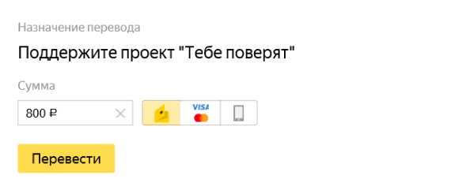

ПОДДЕРЖИТЕ ПРОЕКТ "ТЕБЕ ПОВЕРЯТ"
Даже «незначительные» суммы будут для нас значительной помощью, которые изменят чью-то жизнь к лучшему. «Тебе поверят» – это инициатива энтузиастов, всё, что мы делаем, возможно только благодаря частным пожертвованиям.
Вот какие статьи расходов у нас есть каждый месяц:.
400 рублей– аренда на 1 час психологического кабинета;.
800 рублей – минимальная оплата труда психолога за 1 час;.
3000 рублей — ежемесячная супервизия для. команды психологов;
8000 рублей – курс 10 бесплатных встреч с психологом для одного
человека, пострадавшего от сексуального насилия в детстве..
30000 рублей — оплата работы координатора психологической службы..
Финансовых затрат стоят и работа координатора проекта, работа с экспертными комментариями для медиа, разработка методических материалов и программ, обучение занятых в проекте психологов, организация встреч и онлайн поддержки переживших сексуальное насилие.
Поддержать через Яндекс кошелёк:
Поддержать на Patreon:
Мы верим, что ситуацию нужно менять и знаем, что нужно делать. Мы помогаем восстановиться после насилия, пережитого в детстве, поднимаем в медиа эту важную, табуированную тему, разрабатываем образовательные программы для родителей и специалистов. У нас есть экспертиза и энергия, для того, чтобы устойчиво помогать людям и делать большие дела, нам очень нужна финансовая поддержка.
Нам нужна ваша помощь, чтобы реализовать задуманное и помочь как можно большему количеству людей!